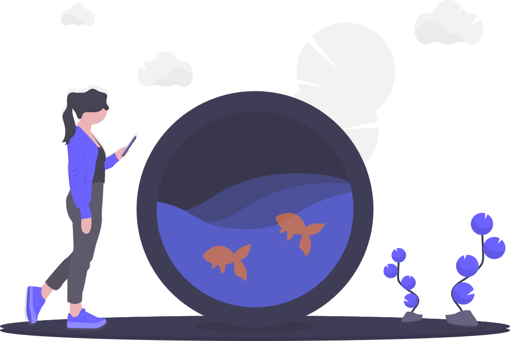

hello 👋
Thanks for popping in to say hi! I’m a software engineer with a background in web application engineering, architecting test automation, and reliability-focused development. I’ve spent much of my career working in the space between building software and making software easier to trust: improving test frameworks, strengthening coverage, finding edge cases, and helping teams identify problems earlier. I’m drawn to engineering work that values maintainability, thoughtful automation, and clear feedback loops. I’ve primarilyworked in Ruby on Rails and React codebases, built and modernized automated test suites, contributed to performance testing, and explored practical uses of AI-assisted development and testing workflows.
👩💻 experience
programming languages:
- python
- ruby
- typescript
- javascript
- sql
- systems programming (c/c++)
full stack web development:
- react
- node.js
- express
- fastify
- ruby on rails
- graphql
- restful apis
infrastructure & delivery:
- aws
- google cloud platform
- docker
- git
- github actions
- agile
- scrum
data persistence & messaging:
- relational databases
- postgresql
- mongodb
- nosql
- kafka
testing:
- playwright
- selenium
- capybara
- watir
- rspec
- cucumber
- test planning
- performance testing
- grafana k6
- shift left testing
- ai-driven testing
- software accessibility
ai tools:
- chatgpt
- cursor
- devin
- prompt engineering
- bmad
🎓 education
With a focus on systems, networking, and practical applications of modern software building techniques, I've taken courses in the following topics:
- data engineering
- distributed data management
- cloud computing
- full stack web development
- operating systems
- database management
- networking protocols
- algorithm design & analysis
- cultural competence in computing
- virtual reality
- programming in rust
I also completed two independent study projects, one on distributed data management and the other on big data pipeline management.
I took 12 undergraduate courses in computer science and math to get the appropriate foundational knowledge for my graduate degree program.
My undergraduate degree focused on studying the economies, modern histories, and political systems of developing countries and regions, in particular Sub-Saharan Africa. This included a comprehensive independent study on the international pressures involved in ending institutionalized apartheid in South Africa. I also spent a summer studying abroad at the University of Cape Town where I learned about the state of the economy and democracy in South Africa.
💼 professional
- Advanced shift-left QA efforts across multiple product lines of a SaaS workplace management platform, enabling earlier defect detection and more proactive quality ownership throughout development
- Migrated a frontend automation suite from Cucumber to Playwright and conducted A/B testing on AI-assisted test generation. This uncovered reliability issues caused by hallucinated test steps and informed a data-driven decision to switch to an AI-optimized version of the suite in Playwright
- Architected and implemented a new Playwright test suite for a greenfield web app, leveraging BMAD and AI-assisted workflows to deliver a robust framework within weeks and accelerating browser test automation delivery
- Drove performance testing coverage in k6, rapidly upskilling into an unfamiliar domain to become a key contributor to the team’s performance suite and creating a GPT-based reporting workflow for clear leadership-ready summaries
- Expanded and scaled a suite of end-to-end browser and integration tests for a SaaS spend tracking web application using RSpec, Capybara, and SitePrism
- Conducted white-box testing within a Ruby on Rails app to enhance code testability, detect bugs, and gain deeper insight into edge cases and areas of risk
- Designed and implemented automated testing patterns, enabling cross-functional teams to achieve comprehensive test coverage with minimal overhead
- Trained management and developers on maintaining a reliable test suite, resulting in the early identification of bugs before release to production
- Enhanced realistic full-system integration testing by reducing reliance on stubs/mocks, improving test accuracy for systems with asynchronous Sidekiq jobs
- Developed and maintained a Cucumber-based automation suite in Ruby for Echo360’s video platform, improving release confidence across core product workflows
- Reduced test execution time by 50% for a suite of more than 6,000 automated tests, decreased production bugs by 35%, and saved $40K annually in licensing costs through automation and tooling improvements
- Expanded automation coverage and reporting to track quality metrics throughout the sprint and before releases, giving teams clearer visibility into product health
- Advised engineers on testable code design and automation best practices, improving collaboration between development and QA to optimize testing practices
- Earned the 2019 Rookie of the Year award for communication, technical impact, and contributions to product quality
- Built React front-end components, integrating Redux for seamless state management in a mass transit ticketing application
- Developed a robust Protractor-based automated UI test suite, achieving near 100% coverage for high-risk areas and surfacing undiscovered product defects
- Increased frontend automation coverage by creating new tracking processes later adopted across Scrum teams, improving visibility into coverage gaps and quality risk
- Contributed to automated and manual testing for mobile and web applications using Ruby, Selenium, Capybara, Postman, Charles Proxy, and TestRail
- Brought customer-facing perspective from a prior sales role into QA, helping teams validate real-world use cases and identify critical edge cases earlier in development
- Managed a $1.2 million book of business with clients ranging from name brand corporations to niche associations while growing several key customer relationships by over 50%
- Created customized training videos and marketing collateral, provided onsite support, coached customer service team, onboarded new customers, and revamped internal processes to improve communication and efficiency
- Engaged primarily cold leads to create sales opportunities by demoing mobile apps, executing lead generation strategies, and preparing proposals and contracts
- Exceeded sales quotas all quarters by leveraging a deep knowledge of CrowdCompass mobile and web products
🏆 awards
I was inducted into this honors society because I ranked in the top 10% of my graduate student class at the Maseeh College of Engineering and Computer Science
I received this $6,000 grant in recognition of my scholarly accomplishments as a computer science student at Portland State University
This award honored my impact on improved product quality, excellent inter-team communication, and shaping future product features all within my first year working at the company
The QA team was presented with this award to recognize the contribution of our work to the overall success of product development at the company throughout 2019
💾 portfolio

animal identifier web app
🚧 UNDER CONSTRUCTION 🚧
Python web app that uses Google's Cloud Vision and Knowledge
Graph APIs to identify an animal in a user-submitted image.
The app is deployed and hosted using the Google Cloud
Platform's Cloud Run, Cloud Storage, Secret Manager, and
Container Registry products.
covid database
I collected data sets on a sample of countries. This included COVID-related data and data points that are indicators of economic security and trust in authority. I designed a database schema, wrote Python scripts to format the raw data sets, and then used SQL to create and query a Postgres database.

my github
If you'd like to see more, I have plenty of personal and academic projects that are public on GitHub. Feel free to take a look at the repos on my profile page!